← Index · ← Previous · Next →
Authors: Alireza Alamgir Tehrani, Mehrdad Boroushaki, Abbas Rajabi
Type: both · Category: quantum information and computing · PDF: https://arxiv.org/pdf/2608.28401v1
Analysis basis: full PDF text, analyzed in chunks
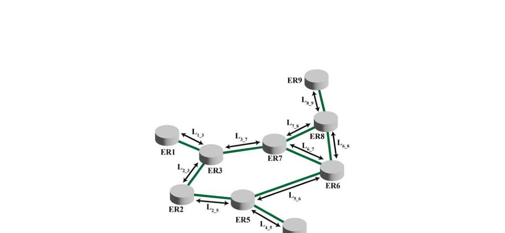
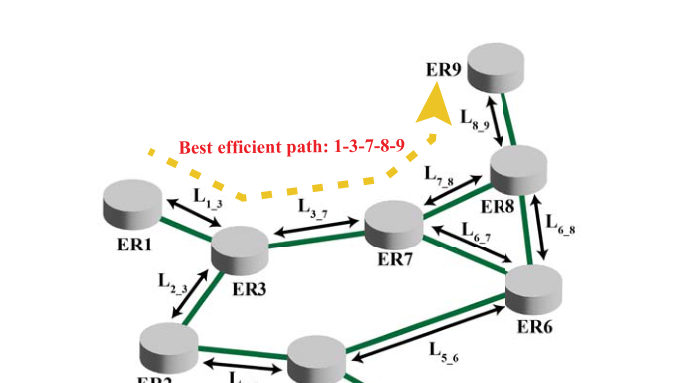
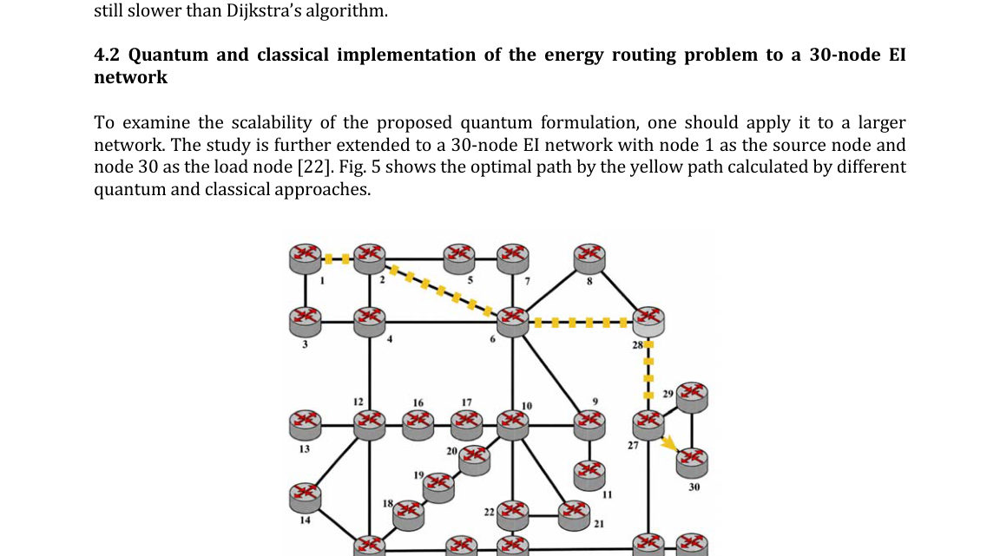
Summary. This research tackles the NP-hard energy routing problem in the Energy Internet by formulating it as a QUBO/Ising model. The authors compare solving this model using classical algorithms (like Dijkstra) against various quantum approaches (QAOA and Quantum Annealing). While the quantum methods validate the formulation, classical solvers demonstrated significantly faster runtime performance on the tested networks.
Why it may be interesting. The work demonstrates a direct application of quantum optimization techniques (QUBO/Ising) to a complex, real-world engineering problem, providing a benchmark for quantum computation feasibility in infrastructure management.
Main problem. The paper addresses the NP-hard problem of finding the energy-efficient path selection (energy routing) within the Energy Internet (EI).
Main result. While quantum methods successfully formulated the problem, classical algorithms like Dijkstra's showed superior runtime performance for the tested 9-node and 30-node networks.
Method. The problem is mapped onto a Quadratic Unconstrained Binary Optimization (QUBO) and Ising Hamiltonian, which are then solved using comparative quantum and classical optimization techniques.
Model / system. The system modeled is the Energy Internet (EI), a network integrating renewable energy sources and loads. The core mathematical tool is the QUBO/Ising formulation derived from minimizing total energy losses (router and conduction losses).
Key observables. Optimal routing path, total energy losses (W), and computational time (s).
Important parameters / regimes. Network size (9-node and 30-node), transmission power (1 kW), and quantum circuit depth (p=1 for QAOA).
Assumptions / limitations. The analysis assumes treating power transmission as a constant parameter to linearize the non-linear loss function for QUBO formulation; quantum simulations are run on classical hardware.
Figures summary. Figures illustrate the EI components and the 9-node network graph structure; Tables compare the performance metrics (time, loss) across Dijkstra, QAOA, and quantum-inspired annealing for both 9-node and 30-node cases.
Paper structure. The paper first defines the EI routing problem and its NP-hard nature. It then develops the QUBO/Ising formulation by incorporating loss functions and constraints. Finally, it compares the performance of classical solvers (Dijkstra) against quantum approaches (QAOA, Quantum Annealing) on increasing network sizes.
The Energy Internet (EI) is a new concept aimed at enhancing the integration of renewable energy sources with the energy grid. Energy-efficient path selection in EI is NP-hard. This research presents an innovative Quadratic Unconstrained Binary Optimization (QUBO) and Ising Hamiltonian formulation for energy routing. The validation and scalability of the proposed formulation were evaluated by applying quantum-inspired annealing and quantum gate optimization to two case studies, a 9-node and a 30-node EI network. A comparative analysis was presented between classical optimization using the Dijkstra algorithm, optimization-based methods, and QAOA using the Qiskit Sampler Primitive, NumpyEigenSolver, and quantum-inspired annealing using the Ocean exact Solver, D-Wave Tabu Sampler, and D-Wave Simulated Annealing. Simulation results based on the proposed formulation agree with the exact solution, while the runtime of classical approaches is less than that of quantum approaches. However, the Simulated Annealing sampler offers the shortest runtime among all quantum methods.
Authors: Piotr Sierant
Type: theory · Category: quantum information and computing · PDF: https://arxiv.org/pdf/2608.28563v1
Analysis basis: full PDF text, analyzed in chunks
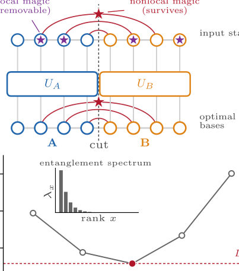
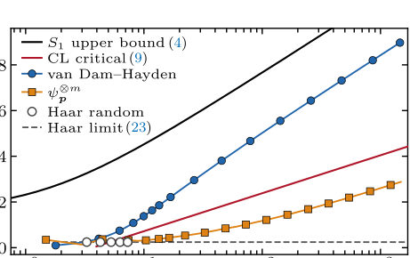
Summary. This theoretical work introduces and solves the problem of quantifying 'nonlocal magic,' a measure of quantum correlation independent of local basis choices. The authors show this quantity is directly computable from the state's entanglement spectrum, providing a robust diagnostic tool. This advances the understanding of quantum resources by distinguishing genuine multipartite correlations from local redundancies.
Why it may be interesting. It provides a powerful, computable diagnostic tool ($D_{ ext{NL}}^{\min}$) for characterizing quantum correlations in many-body states, which is crucial for understanding resource theories beyond simple entanglement measures.
Main problem. The paper aims to rigorously quantify 'nonlocal magic,' which is the component of quantum nonstabilizerness residing purely in the correlations between two subsystems, independent of local basis choices.
Main result. The nonlocal magic is quantified by the distance of the state's entanglement spectrum from the nearest Bell-pair sector, providing a universal and operationally meaningful measure of quantum correlation.
Method. The authors solve an intractable optimization problem by relating the nonlocal magic to the entanglement spectrum structure, leading to closed-form formulas based on Schmidt coefficients.
Model / system. The analysis focuses on pure multiqubit states $|\Psi angle$ subjected to bipartitions $A \cup B$, utilizing concepts from stabilizer states and entanglement theory.
Key observables. Nonlocal Min-Relative Entropy of Nonstabilizerness ($ ext{NMRE}$ or $D_{ ext{NL}}^{\min}$), Nonlocal Stabilizer Fidelity ($F_{NL}$), and the entanglement spectrum.
Important parameters / regimes. The entanglement spectrum ($\lambda$), the number of qubits ($ u$), and the ratio of system sizes ($d/D$) in scaling limits.
Assumptions / limitations. The core results rely on solving the optimization problem by analyzing the structure of the entanglement spectrum, and later sections assume convergence properties for large random states.
Figures summary. Figures illustrate the concept of local vs. correlation magic, showing the nonlocal magic as a distance measure on the entanglement spectrum relative to Bell pairs.
Paper structure. The paper progresses from defining the intractable nonlocal magic problem to deriving a closed-form solution based on the entanglement spectrum. It then establishes equivalences with other measures and analyzes scaling behavior under tensor products and random state limits.
Magic, or nonstabilizerness, is the resource that lifts Clifford circuits to universal quantum computation and has become a standard diagnostic of many-body states. For a state shared between two parties, however, a basic question has remained open: how much of the magic resides in the correlations between the parties rather than in their local bases? Isolating this nonlocal magic requires minimizing over all local bases, an optimization that has so far resisted exact solution. Here we solve it for the stabilizer fidelity: the nonlocal magic of every pure multiqubit state is the distance of its entanglement spectrum from the closest spectrum of Bell pairs. The same quantity governs an apparently unrelated task: a family of states universally embezzles entanglement under local operations and classical communication if and only if its nonlocal magic diverges. The deciding property is not the amount of entanglement but the way the entanglement spectrum spreads its weight across factor-of-two windows of rank, so that critical chains and random-singlet states, with identical logarithmic entanglement scaling, carry unbounded and vanishing nonlocal magic, respectively. Nonlocal magic thereby becomes an operationally meaningful property of quantum correlations, directly accessible to tensor-network simulations and, through entanglement spectroscopy, to experiments.
Authors: Will Broad, Owen Moulding, Takaki Muramatsu, Manuel Brando, Alix McCollam, Femke Bangman, Gertrud Zwicknagl, Kristin Kliemt, Cornelius Krellner, Sven Friedemann
Type: experiment · Category: strongly correlated electrons · PDF: https://arxiv.org/pdf/2608.28119v1
Analysis basis: full PDF text, analyzed in chunks
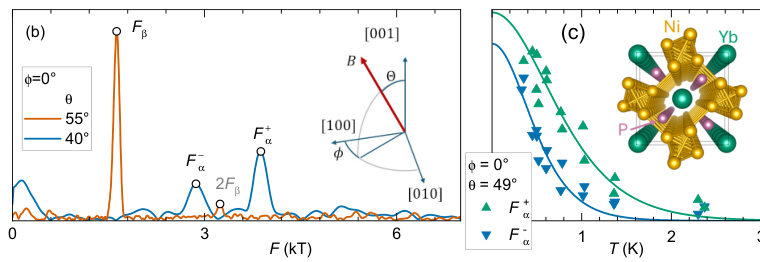
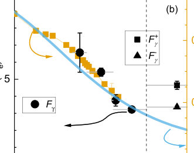
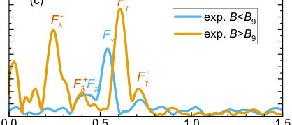
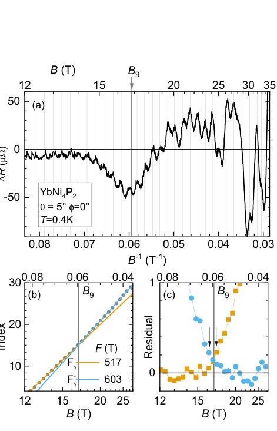
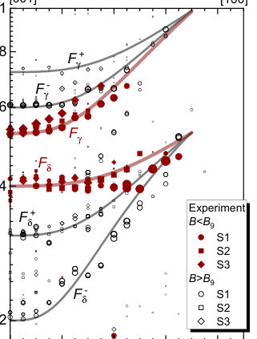
Summary. This paper uses quantum oscillation measurements on the heavy-fermion compound YbNi4P2 to probe its electronic structure under high magnetic fields. Key findings include observing a field-dependent renormalization of the quasiparticle mass and detecting an abrupt change in quantum oscillation frequencies at a critical field. This suggests that external magnetic fields can tune the electronic structure, providing crucial input for theoretical models of correlated electron systems.
Why it may be interesting. The study provides experimental evidence of field-tuning of electronic structure in a strongly correlated material, offering insights into how external fields can drive quantum phase transitions in heavy fermion systems, which is relevant to understanding correlated quantum matter.
Main problem. The study investigates the electronic structure and quasiparticle properties in the heavy-fermion compound YbNi4P2 under the influence of high magnetic fields.
Main result. The research observes a field-dependent decrease in quasiparticle mass and detects an abrupt change in quantum oscillation frequencies at a critical field (17 T), suggesting a field-induced electronic structure transition.
Method. The primary method involves performing quantum oscillation (QO) measurements on magnetoresistance and its derivative, complemented by fitting temperature dependence to extract effective mass.
Model / system. The physical system is the heavy-fermion compound YbNi4P2, characterized by strong electronic correlations arising from the hybridization of local moments and conduction electrons. The analysis compares experimental results to predictions from the single-ion Kondo model.
Key observables. Quantum oscillation frequencies (F), quasiparticle effective mass (m*), Sommerfeld coefficient (gamma_S), and magnetoresistance R(B).
Important parameters / regimes. High magnetic fields (up to 35 T), the critical field B9 (17 T), and the characteristic energy scale of the Kondo effect.
Assumptions / limitations. The analysis assumes that the observed phenomena can be modeled by the single-ion Kondo model and that the abrupt frequency changes signal a Lifshitz transition or electronic structure change.
Figures summary. Figures illustrate QO signals across different field orientations, the field-dependence of the effective mass (showing splitting above B9), and the abrupt change in oscillation frequencies at the critical field B9.
Paper structure. The paper systematically analyzes QO data, first establishing the field-dependence of the quasiparticle mass relative to the Kondo model, then pinpointing the critical field B9 where frequency splitting occurs, and finally discussing the implications for Fermi surface topology.
We study the Fermi surface topology and quasiparticle properties in the heavy fermion compound YbNi4P2 at high magnetic fields using quantum oscillation measurements. We observe a large decrease of the quasiparticle mass with increasing field and demonstrate good qualitative agreement with the single-ion Kondo model. At the putative Lifshitz transition at 17 T, we observe a sudden change of quantum oscillation frequencies suggesting an abrupt change of the electronic structure and/or quasiparticle characteristics. Our results demonstrate the ability to tune the electronic structure and provide input for theoretical models of YbNi4P2 and correlated electron systems in high magnetic fields.
Authors: Sven Bachmann, Severin Schraven, Jacob Shapiro, Simone Warzel
Type: theory · Category: strongly correlated electrons · PDF: https://arxiv.org/pdf/2608.27767v1
Analysis basis: full PDF text, analyzed in chunks
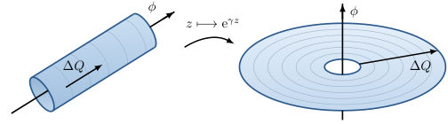
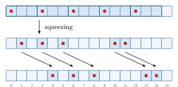
Summary. This paper rigorously proves the fractional quantization of the Hall conductance for Laughlin states by defining and calculating a many-body topological index. Using an infinite Matrix Product State formalism on a thin cylinder, the authors show that this index yields $\sigma_H = 1/q$, establishing the quantization as a fundamental topological property of the FQH phase.
Why it may be interesting. The use of topological invariants derived from algebraic structures (like the index on the CAR algebra) to prove fundamental quantization results in strongly correlated electron systems provides a powerful, non-perturbative theoretical tool applicable to other quantum many-body problems.
Main problem. The paper aims to rigorously establish the fractional quantization of the Hall conductance ($\sigma_H$) for Laughlin states by deriving it directly from a topological index, bypassing reliance on spectral gap assumptions.
Main result. The authors prove that the Hall conductance for Laughlin states is quantized to $\sigma_H = 1/q$, where $q$ is an integer, demonstrating that this value is a robust topological invariant.
Method. The core method involves recasting the Laughlin-pump argument into a topological invariant defined as an index ($ ext{ind}(\omega_1, \omega_2)$) for a pair of pure states, which is then calculated using an infinite Matrix Product State (iMPS) representation.
Model / system. The physical system is the Fractional Quantum Hall (FQH) effect, modeled by Laughlin states ($\omega_q$). The analysis is performed on a thin cylinder geometry using the CAR algebra of observables.
Key observables. Hall conductance ($\sigma_H$), the topological index ($ ext{ind}(\omega_1, \omega_2)$), and the filling fraction ($1/q$).
Important parameters / regimes. The analysis is most rigorous in the thin-cylinder limit (large $\gamma$) and involves the flux quantum insertion parameter $k$.
Assumptions / limitations. The derivation relies on the validity of the iMPS representation for sufficiently large cylinder radii ($\gamma$) and the definition of the index's stability under deformations.
Figures summary. Figure 1 illustrates the conformal equivalence between a cylinder and an annulus. Figure 2 shows the iMPS representation, detailing how elementary 'squeezing' operations map the root partition related to flux insertion.
Paper structure. The argument progresses by first defining the physical problem (flux insertion $ ightarrow \sigma_H$), then abstracting it into a topological index, proving the index's mathematical robustness (automorphism invariance, stability), and finally applying this index to the specific Laughlin state to derive the quantization result.
We provide a rigorous Laughlin-pump argument that establishes the fractional quantization of the Hall conductance directly from the Laughlin state as a topological index. Our proof uses a recently defined index of a pair of pure states together with an infinite matrix product state analysis that is rigorous on a sufficiently thin cylinder. By virtue of the connection to an index, our result implies, in particular, that Laughlin states are representatives of topologically stable fractional quantum Hall phases.
Authors: Mirosław Werwiński, Andrzej Szajek, Andrzej Kowalczyk
Type: theory · Category: strongly correlated electrons · PDF: https://arxiv.org/pdf/2608.28238v1
Analysis basis: full PDF text, analyzed in chunks
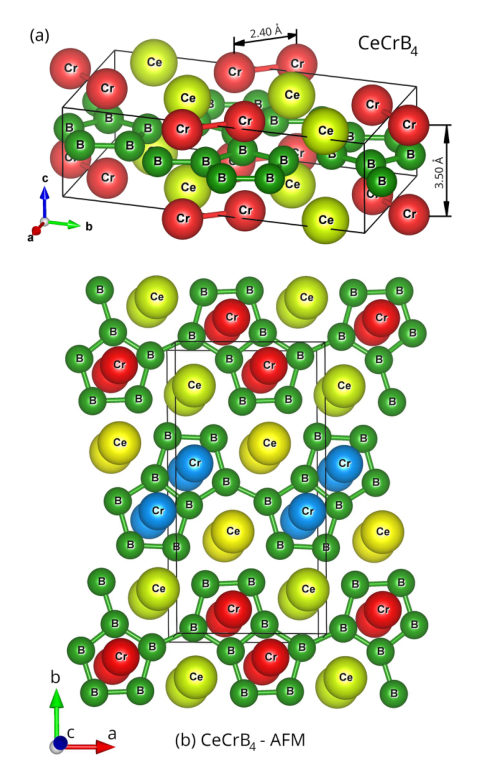
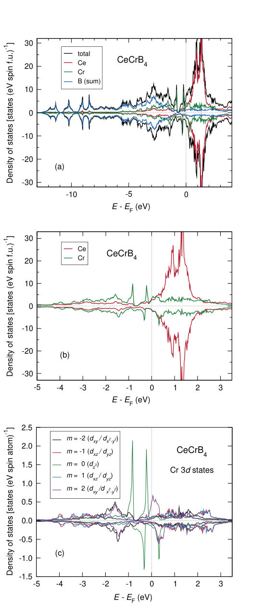
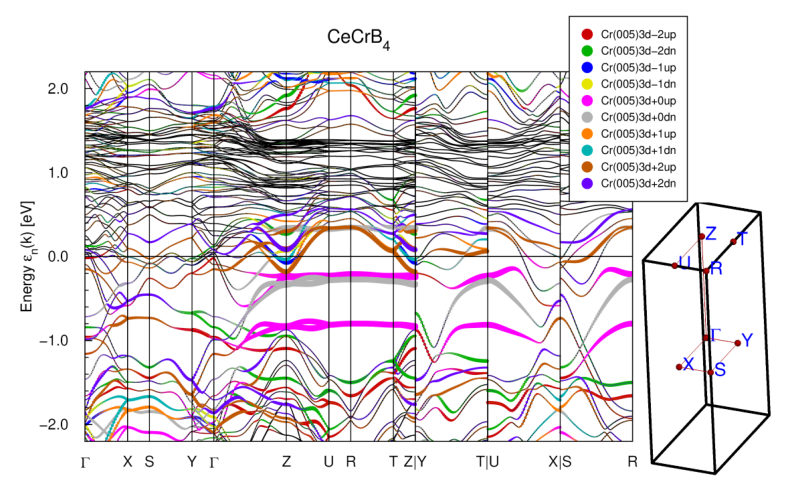
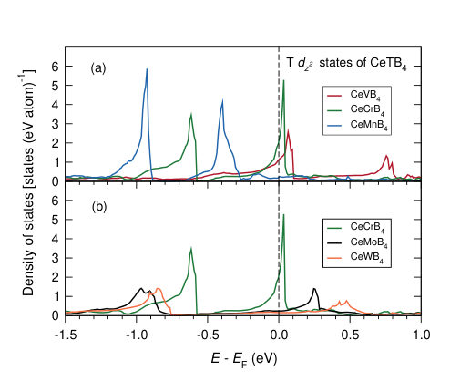
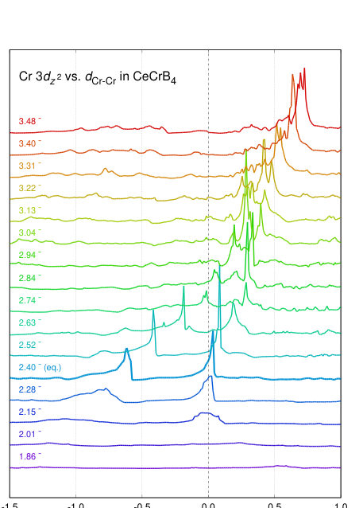
Summary. This work uses DFT to study the electronic and magnetic properties of $ ext{CeCrB}_4$, focusing on the $ ext{Cr–Cr}$ dimer motif. It determines that the material's ground state is ferromagnetic and elucidates that the $ ext{Cr–Cr}$ bonding states behave molecularly. The findings provide insights into how crystal structure dictates magnetic ordering and electronic behavior in these boride compounds.
Why it may be interesting. The investigation into localized magnetic moments and the strong correlation effects in the $4f$ electrons of Cerium, combined with the analysis of crystal field splitting in the $ ext{Cr}$ $3d$ orbitals, touches upon correlated electron physics relevant to heavy fermion systems.
Main problem. To clarify the molecular nature of localized dimer states in $ ext{MTB}_4$ compounds, determine the magnetic ground state of $ ext{CeCrB}_4$, and resolve the valence state and magnetic moment of Ce.
Main result. The calculations predict that the ferromagnetic (FM) state is the magnetic ground state, and the $ ext{Cr–Cr}$ dimer electronic structure exhibits clear molecular-like bonding and antibonding splitting as a function of inter-dimer distance.
Method. Density Functional Theory (DFT) using the GGA+U framework, incorporating fully relativistic calculations and analyzing the electronic density of states (DOS) and magnetic moments.
Model / system. The study focuses on the $ ext{CeCrB}_4$ crystal structure, which belongs to the $ ext{MTB}_4$ family of ternary metal borides, featuring structurally embedded $ ext{Cr–Cr}$ dimers.
Key observables. Magnetic ground state ($ ext{FM}$ vs. $ ext{AFM}$ energy difference), $ ext{Cr–Cr}$ dimer electronic splitting, $ ext{Ce}$ valence state, and magnetic moments ($\mu_s, \mu_l$).
Important parameters / regimes. The Hubbard parameter $U_{4f} = 6 ext{ eV}$ is used for the $ ext{Ce}$ $4f$ orbitals; the intra-dimer distance $d_{ ext{Cr–Cr}}$ is systematically varied.
Assumptions / limitations. The calculations are subject to DFT limitations, and the $ ext{PBE}+ ext{U}$ correction, while improving the $ ext{Ce}$ $4f$ description, cannot capture all dynamic many-body correlation effects.
Figures summary. Figures show the crystal structure and $ ext{Cr–Cr}$ dimers, and the DOS reveals strong hybridization near the Fermi level, with localized $ ext{Cr}$ states standing out.
Paper structure. The paper systematically investigates the magnetic ground state by comparing $ ext{FM}$ and $ ext{AFM}$ configurations, followed by a detailed electronic structure analysis focusing on the $ ext{Cr–Cr}$ dimer bonding mechanism by varying the inter-dimer distance.
CeCrB$_4$ belongs to the family of MTB$_4$ ternary metal borides, some of whose magnetic phases have recently been identified as quantum spin dimers. Employing density functional theory within the GGA+$U$ framework, this work investigates the key ground-state properties of this system, including its ferromagnetic ground state, the mixed-valence nature of cerium, and the charge transfer from the cationic cerium--chromium layers to the anionic boron layers. In particular, we focus on elucidating the bonding mechanism within the structurally embedded Cr-Cr dimers. Specifically, we evaluate a previously proposed interpretation that the localized Cr $3d_{z^2}$ states are molecular-like bonding and antibonding states. The calculated dependence of the $3d_{z^2}$ electronic structure on the intra-dimer distance correlates with the level-splitting characteristics known for classical homonuclear diatomic molecules.
Authors: Jiahui Wu, Chao Zhang, Zipeng Wu, Shilin Huang
Type: theory · Category: quantum information and computing · PDF: https://arxiv.org/pdf/2608.28571v1
Analysis basis: full PDF text, analyzed in chunks
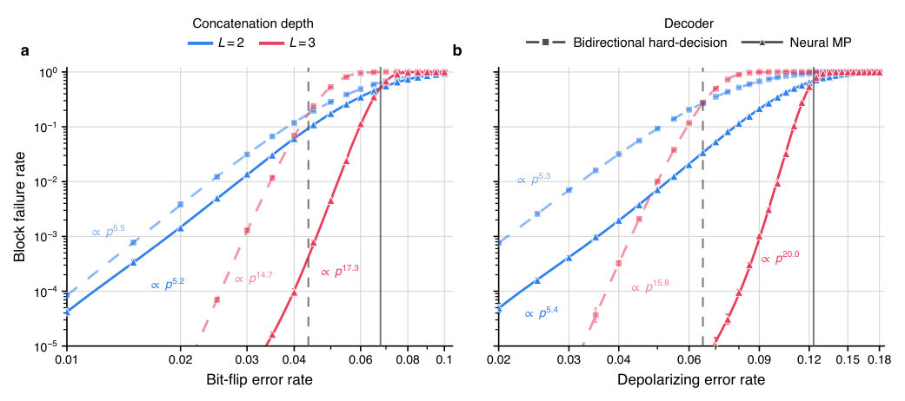
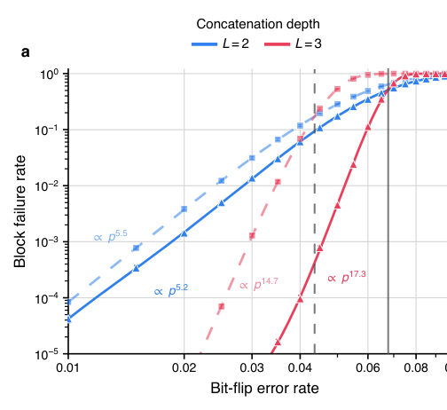
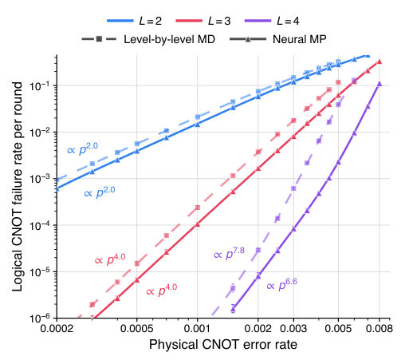
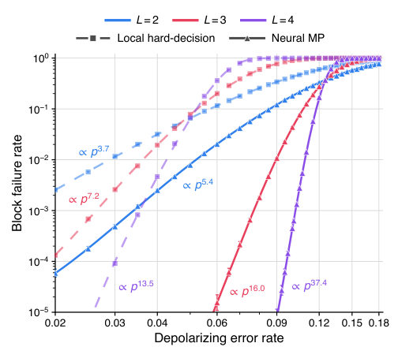
Summary. This work presents a novel neural message-passing decoder for decoding complex concatenated quantum error-correcting codes. By propagating soft beliefs across code levels, the decoder achieves substantial improvements in error thresholds compared to existing state-of-the-art methods. This framework offers a general tool for advancing fault-tolerant quantum computation design.
Why it may be interesting. The use of neural networks to model complex, structured error correction processes provides a powerful, trainable tool for analyzing fault tolerance limits in quantum computation.
Main problem. The paper addresses the challenge of efficiently and accurately decoding general concatenated quantum error-correcting codes.
Main result. The proposed neural message-passing decoder significantly outperforms state-of-the-art hard-decision decoders, notably nearly doubling the depolarizing pseudo-threshold for the [[15, 7, 3]] Hamming code.
Method. It introduces a neural message-passing framework where soft beliefs propagate bidirectionally across code concatenation levels, using lightweight networks only for message aggregation.
Model / system. The model focuses on concatenated quantum stabilizer codes, tested on specific examples like the [[15, 7, 3]] Hamming code and many-hypercube codes. The framework is designed to be generic for exploring various code constructions.
Key observables. Pseudo-threshold ($p^*$) under bit-flip and depolarizing noise, and logical-CNOT failure rates.
Important parameters / regimes. The number of message-passing iterations (fixed for bounded latency), and the specific noise models (bit-flip, depolarizing).
Assumptions / limitations. The core message-passing rules are kept fixed, departing from fully end-to-end neural decoders, and the initial state can be learned to capture circuit-level error distributions.
Figures summary. Figures compare block failure rates for the Hamming code and many-hypercube code under different noise types, demonstrating the decoder's superior performance compared to baseline decoders.
Paper structure. The paper details the neural message-passing architecture, presents results comparing its performance against hard-decision decoders on various code families, and discusses fine-tuning on circuit-level error data.
We introduce a neural message-passing framework for decoding general concatenated stabilizer codes. Soft beliefs propagate bidirectionally across concatenation levels, and lightweight neural networks learn only to aggregate incoming messages. For the concatenated $[[15,7,3]]$ quantum Hamming code, the resulting decoder achieves substantially higher thresholds than the state-of-the-art bidirectional hard-decision decoder under both bit-flip and depolarizing noise. In particular, the depolarizing pseudo-threshold nearly doubles, from $6.5\%$ to $12.3\%$. For many-hypercube codes, a decoder fine-tuned on circuit-level errors in Knill's teleportation-based error correction can achieve lower logical-CNOT failure rates than their dedicated decoder, using a fixed number of message-passing iterations instead of extensive combinatorial search. Our framework provides a generic decoding tool for exploring the design space of concatenated codes, including non-CSS constructions, toward low-overhead fault tolerance.
Authors: Spencer Chang, Thomas Driscoll, Sokratis Trifinopoulos
Type: theory · Category: other · PDF: https://arxiv.org/pdf/2608.27559v1
Analysis basis: full PDF text, analyzed in chunks
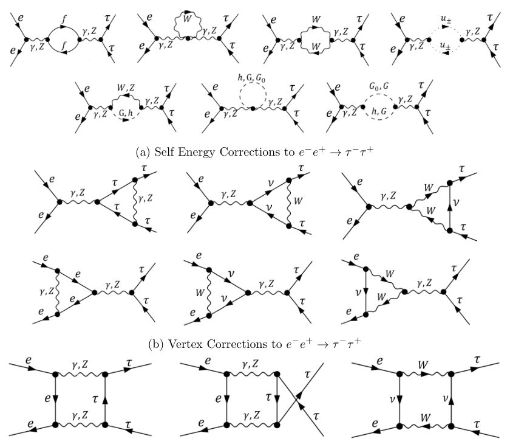
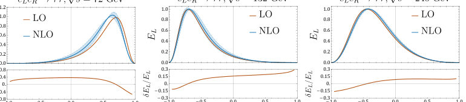
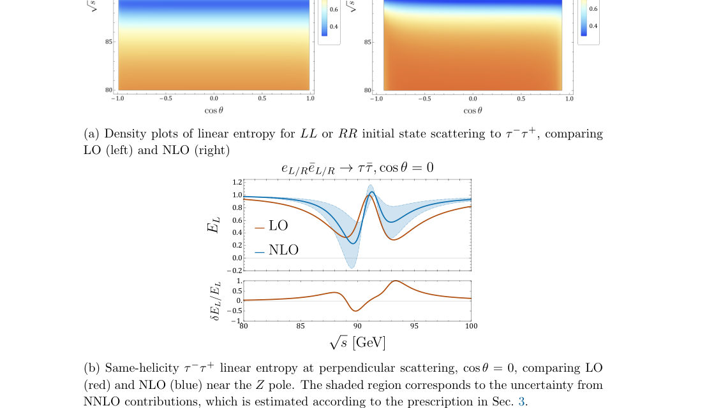
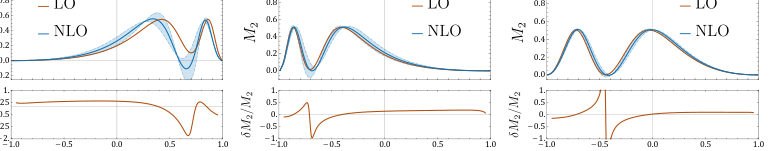
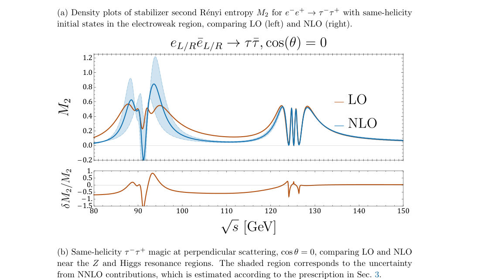
Summary. This paper calculates how electroweak radiative corrections affect quantum measures like entanglement and magic in processes such as $\ell^+\ell^- o au^- au^+$ and $ZZ$. By treating the final state as a multi-qudit system, the authors show that these corrections coherently alter the quantum structure of the final state. The results establish these quantum observables as powerful, new tools for precision measurements at future lepton colliders.
Why it may be interesting. The application of quantum information diagnostics (entanglement, magic) to high-energy particle physics processes provides a novel, precision-sensitive probe of fundamental interactions, bridging quantum information theory with particle phenomenology.
Main problem. The study investigates how virtual next-to-leading-order (NLO) electroweak corrections modify the quantum structure of observables like entanglement and magic in lepton-lepton collisions.
Main result. Radiative corrections coherently modify the quantum structure of the final state, causing shifts in regions of maximal entanglement and altering the generated magic relative to leading order.
Method. The authors compute entanglement entropy and stabilizer second Rényi entropy by treating outgoing particles as multi-qudit systems and performing one-loop calculations.
Model / system. The physical system is lepton-lepton collisions ($\ell^+\ell^- o au^- au^+, ZZ$), analyzed within Quantum Field Theory. The outgoing particles are modeled as multi-qudit systems (qubits for fermions, qutrits for massive bosons).
Key observables. Entanglement entropy, stabilizer second Rényi entropy, and 'magic' (non-stabilizerness).
Important parameters / regimes. Next-to-leading-order (NLO) electroweak corrections, future lepton collider energies, and particle masses.
Assumptions / limitations. The analysis focuses on the production-side quantum state before decay reconstruction, and the initial state is assumed to have definite helicities.
Paper structure. The paper systematically calculates quantum observables by incorporating one-loop electroweak corrections, detailing the theoretical framework for handling divergences and projecting the state onto the outgoing two-particle Hilbert space.
We study how virtual next-to-leading-order electroweak corrections affect the quantum observables of entanglement and magic in lepton--lepton collisions. Treating the outgoing particles as multi-qudit systems, $\textit{i.e.}$, qubits for spin-$\tfrac{1}{2}$ fermions and qutrits for massive vector bosons, we compute entanglement entropy and the stabilizer second Rényi entropy for the processes $\ell^+\ell^- \to τ^-τ^+,\, ZZ$ at one-loop accuracy. We show that radiative corrections coherently modify the quantum structure of the final state, shifting regions of maximal entanglement and altering the generated magic relative to leading order. Our results demonstrate that these quantum observables provide novel, precision-sensitive probes of electroweak dynamics at future lepton colliders and open a path toward their use in searches for new physics.
Authors: H. Lee, M. Yashima, M. Kakoi, T. Ino, Y. Arai, K. Kitagawa, H. Sakurai, Y. Takano, K. Kuroki, H. Mukuda
Type: experiment · Category: strongly correlated electrons · PDF: https://arxiv.org/pdf/2608.27917v1
Analysis basis: full PDF text, analyzed in chunks
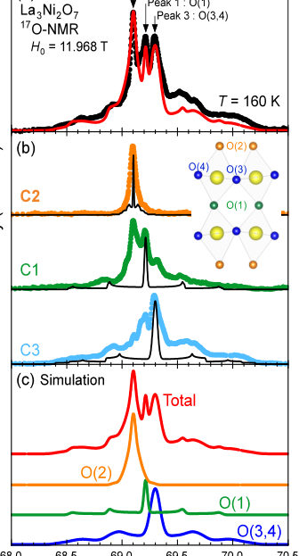
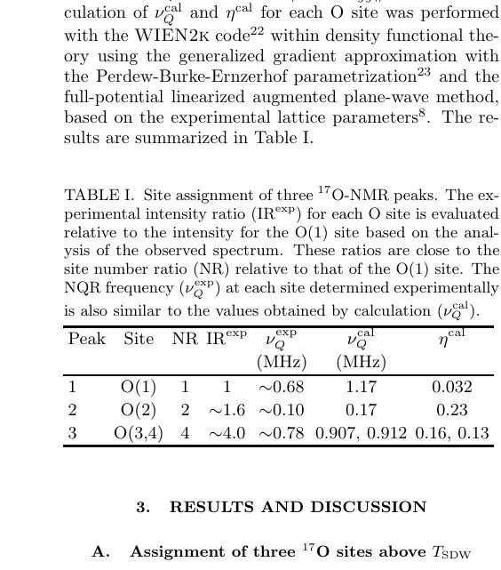
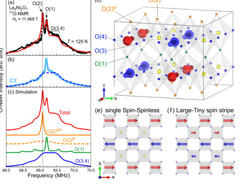
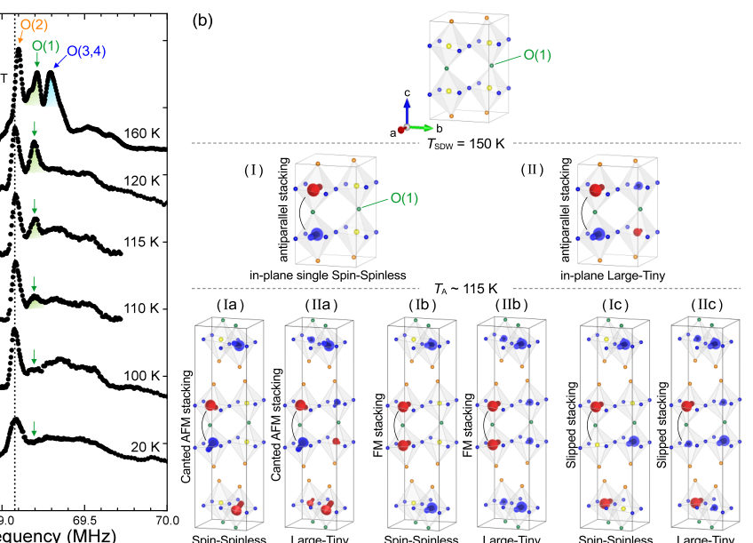
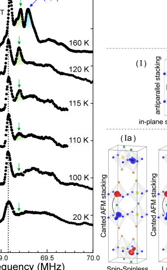
Summary. This work uses site-selective $^{17} ext{O-NMR}$ to probe the spin structure of the bilayer nickelate La3Ni2O7. It reveals a complex interplay between an in-plane Spin Density Wave (SDW) order and the formation of an interlayer spin-singlet state. The findings highlight that the magnetic behavior is highly orbital-selective, with different Ni orbitals governing different types of spin correlations.
Why it may be interesting. The concept of orbital-selective magnetism, where different orbitals participate in different types of magnetic ordering (e.g., SDW vs. spin-singlet), is highly relevant to understanding complex correlated electron physics in cuprates and nickelates.
Main problem. To investigate the spin structure of the Spin Density Wave (SDW) order and understand the orbital-selective nature of interlayer spin coupling in the bilayer nickelate La3Ni2O7.
Main result. The study reveals the coexistence of SDW order (driven by $d_{x^2-y^2}$ spins) and interlayer spin-singlet formation (governed by $d_{3z^2-r^2}$ spins), characterized by distinct spin configurations at different oxygen sites.
Method. Site-selective $^{17} ext{O-NMR}$ measurements were used to probe the local magnetic environment and spin susceptibility at different oxygen sites within the material.
Model / system. The physical system is the bilayer nickelate La3Ni2O7. The analysis distinguishes between different oxygen sites (O(1), O(2), O(3,4)) to map out the orbital-selective nature of the magnetic interactions.
Key observables. NMR spectral broadening/shifts, local spin susceptibility ($\chi_{ ext{loc}}^{ ext{spin}}$), and the temperature dependence of the internal magnetic field ($H_{ ext{int}}$) at various O sites.
Important parameters / regimes. Transition temperatures $T_{ ext{SDW}} (= 150 ext{ K})$ and $T_{ ext{A}} (\sim 115 ext{ K})$; the relative contributions of $d_{x^2-y^2}$ and $d_{3z^2-r^2}$ orbitals to magnetism.
Assumptions / limitations. The observed magnetic behavior is interpreted through the lens of orbital-selective spin coupling, distinguishing between in-plane SDW magnetism and interlayer spin-singlet formation.
Figures summary. Figures illustrate the temperature dependence of the $^{17} ext{O-NMR}$ spectra, showing peak broadening below $T_{ ext{SDW}}$ and the disappearance of the O(1) signal below $T_{ ext{A}}$.
Paper structure. The paper systematically analyzes NMR data across different temperature regimes ($>T_{ ext{SDW}}$, $T_{ ext{SDW}} > T > T_{ ext{A}}$, $T < T_{ ext{A}}$) to map out the evolution of spin order, first establishing the SDW state, then identifying the spin-singlet formation, and finally detailing the anomalous spin reconfiguration below $T_{ ext{A}}$.
The spin structure of the spin density wave (SDW) order in the bilayer nickelate La$_3$Ni$_2$O$_7$ has been investigated using site-selective $^{17}$O-NMR measurements on the inner apical O(1), outer apical O(2), and planar O(3,4) sites. Below $T_{\rm SDW}$ (= 150 K), the peak of all planar O(3,4) sites significantly broadens due to the emergence of a finite internal magnetic field, whereas O(2) sites remain with no (or a negligibly small) internal field. These results are consistent with commensurate SDW order with a single spin-spinless (or large-tiny spin) stripe. As for the O(1) sites that bridge the NiO$_2$ planes, the internal field is nearly canceled below $T_{\rm SDW}$, indicating an antiparallel spin configuration between adjacent planes. However, below $T_\text{A}$ ($\sim$ 115 K), the spectrum of the O(1) site disappears even though the in-plane SDW order remains robust, implying that the antiparallel spin configuration through the Ni--O(1)--Ni bond is not particularly stable below $T_{\rm A}$, despite the expected strong interlayer spin coupling between the NiO$_2$ planes. Above all, we emphasize that the local spin susceptibility is extremely small at the O(2) site that has a strong covalency with the $d_{3z^2-r^2}$ orbital, indicating a well-developed interlayer spin-singlet formation in the Ni-$d_{3z^2-r^2}$ orbitals bridging the NiO$_2$ planes. These findings shed new light on the interlayer spin-singlet formation and the anomalous spin reconfiguration through the $\text{Ni--O(1)--Ni}$ bonding orbitals connecting the NiO$_2$ planes, which characterize the orbital-selective nature of the bilayer nickelate La$_3$Ni$_2$O$_7$.
Authors: Owen Friedewald, Ali Shiri Sichani, Chi-Ren Shyu
Type: theory · Category: quantum information and computing · PDF: https://arxiv.org/pdf/2608.27592v1
Analysis basis: full PDF text, analyzed in chunks
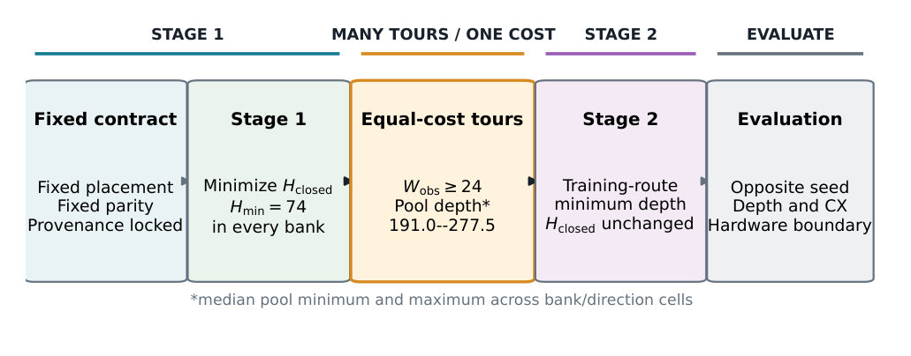
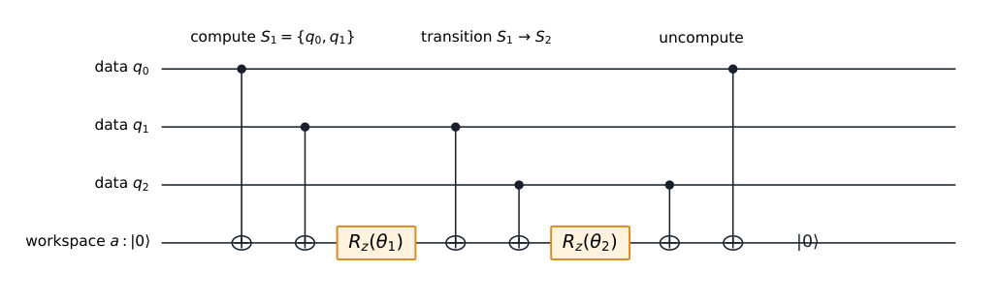
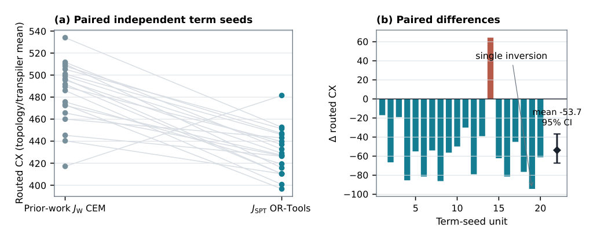
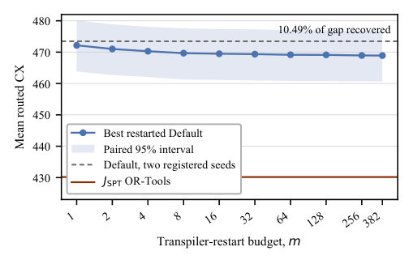
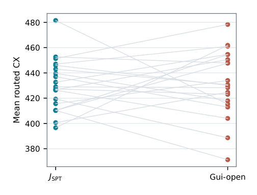
Summary. This paper introduces a novel two-stage compiler optimization technique for ordering commuting phase terms in quantum circuits. It leverages the fact that multiple orderings can achieve the same minimum energy cost (a 'plateau'). By sampling and selecting among these equal-cost options, the authors demonstrate measurable improvements in circuit depth and gate count compared to prior state-of-the-art methods.
Why it may be interesting. This work tackles a highly practical, low-level optimization problem in quantum compilation—resource reduction—by mathematically characterizing and exploiting the inherent symmetries (degeneracy) in the problem space.
Main problem. The paper addresses the challenge of selecting optimal orderings for commuting phase terms in quantum circuits, specifically exploiting the degeneracy (plateau) of multiple equal-cost solutions.
Main result. A two-stage search strategy that samples equal-cost tours significantly reduces circuit depth (e.g., 12.83% reduction) compared to prior methods, although this benefit is shown to be dependent on the specific quantum compiler routing used.
Method. The methodology employs a classical two-stage permutation search under a fixed compiler contract: Stage 1 finds the primary support optimum, and Stage 2 samples and selects among all equal-cost tours using a 'frozen routed score.'
Model / system. The work models quantum computation using synthetic 16-qubit assignment-Ising instances derived from a QUBO model, focusing on the ordering of commuting phase terms in the Hamiltonian simulation.
Key observables. Circuit depth (e.g., opposite-SABRE-seed depth), number of routed controlled-NOT (CNOT) gates, and the multiplicity of minimum-support-cost orderings.
Important parameters / regimes. The size of the system (e.g., 16 qubits, 36 or 48 terms) and the specific compiler contract constraints (fixed placement, maintained-parity).
Assumptions / limitations. The depth benefit is explicitly noted to be 'router-conditioned' and not a guaranteed hardware benefit, and the synthetic workload does not represent end-to-end electronic-design-automation behavior.
Figures summary. Figure 1 illustrates the two-stage ordering process, detailing how Stage 1 identifies the minimum support cost, and Stage 2 selects among multiple tours achieving that cost based on depth metrics.
Paper structure. The paper is structured around defining a fixed compiler contract, executing the two-stage search (Stage 1 for primary cost, Stage 2 for plateau selection), and then rigorously comparing the resulting circuit metrics against various benchmarks and sensitivity analyses.
Ordering objectives for commuting phase terms can have many equal optima, yet prior methods do not characterize or exploit those ties. We use a classical two-stage permutation search under fixed placement and maintained-parity quantum lowering: Stage 1 certifies the primary support optimum, and Stage 2 samples equal-cost tours and selects by a frozen routed score. On synthetic 16-qubit assignment-Ising instances, exact counting through 20 terms establishes instance-dependent multiplicity; when the support lower bound is attained, the reversal-reduced width equals the number of undirected Hamiltonian paths of the support line graph. A revised engineering analysis found 9.14% fewer routed controlled-NOT gates than unoptimized order, while the registered comparison found 11.10% fewer than prior stochastic search. Among 24 sampled minimum-support-cost orders at 36 terms, direct-depth selection reduced opposite-SABRE-seed depth by 12.83% in all 20 aggregates, whereas a matched 24-restart control changed depth by only -0.41% (unresolved). Candidate rankings persisted across SABRE routing seeds, explaining why selection survived routing re-randomization. The depth benefit transferred to a second generator and to 48 terms, but reversed under BasicSwap. On a prospective IBM Heron panel, raw generator error shifted by -0.0025 (-0.59%); fixed-panel shot uncertainty excluded zero, but term-seed inference remained unresolved. Equal-primary-cost tours are a useful router-conditioned compiler freedom, not a guaranteed hardware benefit.
Authors: Darell Timothy Tarigan, Fadhil Fatih Shiddiq, Hadyan Luthfan Prihadi, Donny Dwiputra, Jusak S. Kosasih, Yanoar P. Sarwono, Freddy Permana Zen, Rui-Qin Zhang
Type: theory · Category: quantum information and computing · PDF: https://arxiv.org/pdf/2608.27993v1
Analysis basis: full PDF text, analyzed in chunks
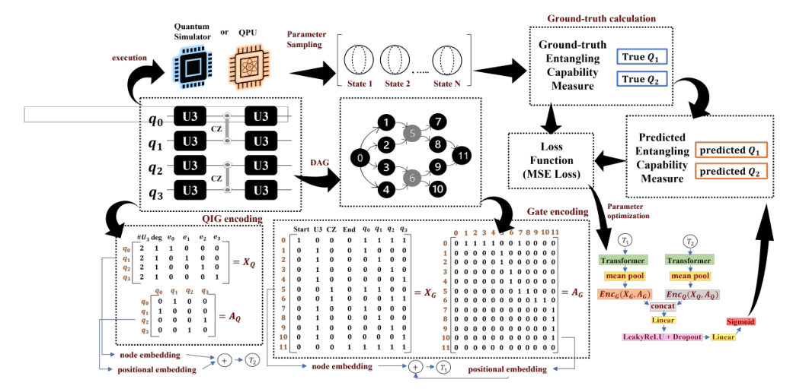
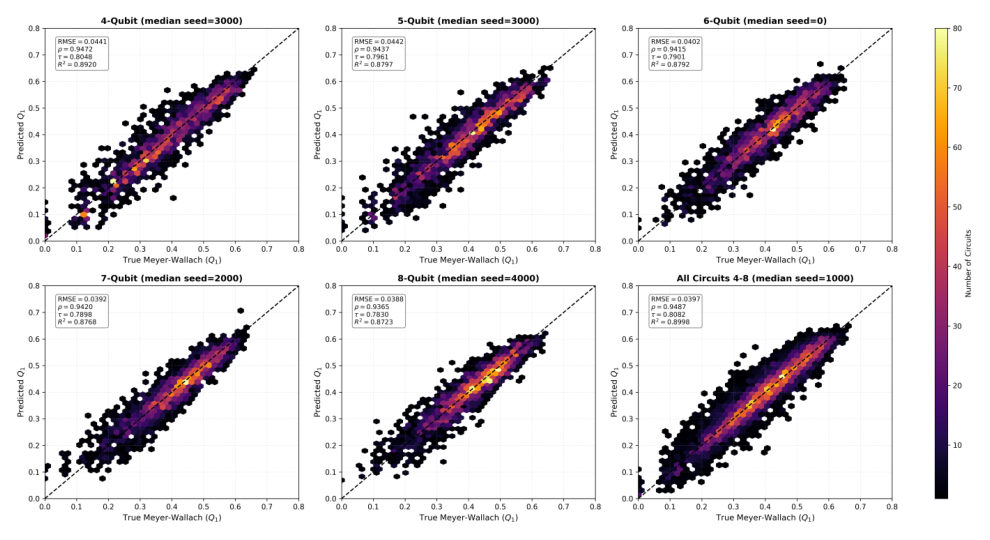
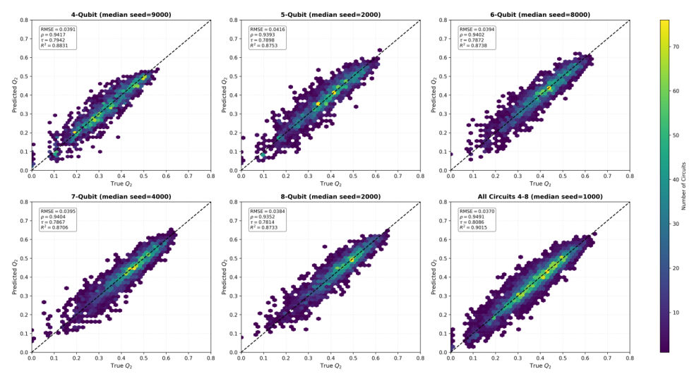
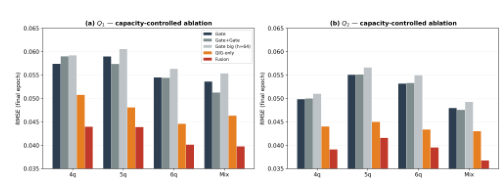
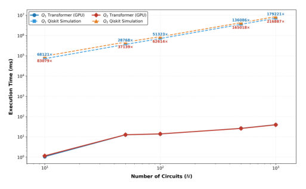
Summary. This paper introduces QIG-Fusion, a novel Transformer model designed to predict complex multipartite entanglement measures ($Q_1$ and $Q_2$) in Parameterized Quantum Circuits. By encoding the circuit structure into a specialized graph format, the model bypasses the prohibitive computational cost of direct entanglement calculation. This breakthrough significantly accelerates Quantum Architecture Search by providing an efficient, high-fidelity surrogate objective function.
Why it may be interesting. The work provides a powerful, scalable machine learning tool to diagnose the fundamental resource (entanglement) of quantum circuits, which is essential for designing and optimizing quantum algorithms for NISQ devices.
Main problem. The challenge is efficiently characterizing the multipartite entanglement within Parameterized Quantum Circuits (PQCs), which is crucial for assessing their utility in near-term quantum algorithms.
Main result. The proposed QIG-Fusion model achieves low prediction errors (RMSE $\approx 0.037$ for $Q_2$) and high correlation ($ ho \le 0.95$) when estimating entanglement measures for large-scale PQCs.
Method. The authors developed a graph-based Transformer surrogate model that fuses a Qubit-Interconnected Graph (QIG) encoding with a gate-level Directed Acyclic Graph (DAG) encoder.
Model / system. The study analyzes Parameterized Quantum Circuits (PQCs) acting on $n$-qubit systems, where the circuit structure is encoded into a graph representation for the Transformer input.
Key observables. Multipartite entanglement, quantified by the first-order Meyer-Wallach measure ($Q_1$) and the second-order Scott measure ($Q_2$).
Important parameters / regimes. System size (4- to 8-qubit systems), circuit depth, and the number of entangling gates.
Assumptions / limitations. The primary assumption is that the entanglement structure can be accurately predicted by a Transformer model trained on graph representations, bypassing computationally expensive direct quantum simulation.
Figures summary. Figures illustrate the pipeline: encoding the PQC structure using QIG and DAG, comparing predicted entanglement ($Q_1, Q_2$) against ground truth simulation results, and demonstrating the model's superior performance over simpler baselines.
Paper structure. The paper establishes the need for multipartite entanglement measures ($Q_1, Q_2$) in PQCs. It then details the limitations of direct measurement, leading to the proposal of the QIG-Fusion Transformer surrogate model. Finally, it presents extensive numerical results validating the model's accuracy and efficiency for Quantum Architecture Search (QAS).
Multipartite entanglement is a critical property of parameterized quantum circuits (PQCs), particularly for near-term hybrid quantum-classical algorithms, as it characterizes their ability to generate highly entangled states. However, measuring entanglement remains computationally expensive because conventional Monte Carlo sampling scales unfavorably with system size. To overcome this challenge, we introduce a graph-based transformer surrogate that predicts both the first-order Meyer-Wallach measure ($Q_1$) and the second-order Scott measure ($Q_2$), resolving entanglement structures indistinguishable under $Q_1$ alone. Our central contribution is the qubit-interconnected graph (QIG) encoding for transformers, where each node represents a qubit and weighted adjacencies record entangling-gate multiplicities. Fused with a gate-level DAG encoder, this yields the QIG-Fusion model. Evaluated on 50,000 circuits spanning 4- to 8-qubit systems across a ten-seed protocol, QIG-Fusion achieves an RMSE as low as 0.037 ($Q_2$) and 0.038 ($Q_1$), with a Spearman rank correlation up to 0.95. This framework significantly reduces the computational cost of Quantum Architecture Search (QAS), enabling efficient entanglement estimation for large-scale PQCs.
Authors: Carli Bruinsma, Dmitry Grinko, Maris Ozols
Type: theory · Category: quantum information and computing · PDF: https://arxiv.org/pdf/2608.28569v1
Analysis basis: full PDF text, analyzed in chunks
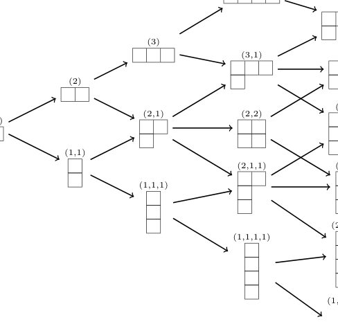
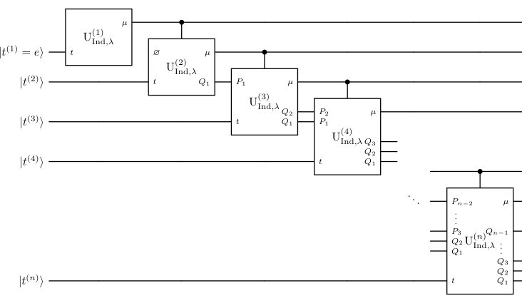
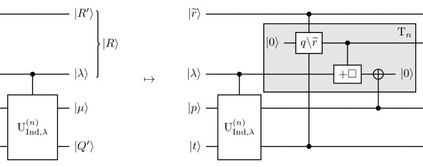
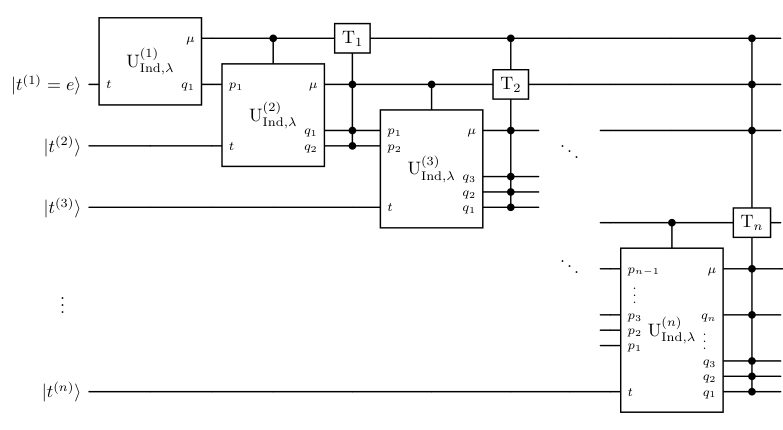
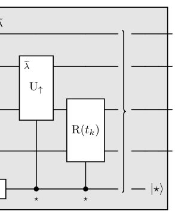
Summary. This paper provides a detailed, gate-level analysis and improved construction for the Quantum Fourier Transform specific to the symmetric group $S_n$. By analyzing the structure through Young tableaux and subgroup chains, the authors refine the gate complexity bounds, offering a more rigorous quantum circuit blueprint for this fundamental operation.
Why it may be interesting. The rigorous, low-level circuit decomposition of a group-theoretic quantum transform is highly relevant for developing practical quantum algorithms for representation theory, which underpins many quantum simulation tasks.
Main problem. The paper aims to develop an efficient, low-level quantum circuit implementation for the Quantum Fourier Transform (QFT) associated with the symmetric group ($S_n$).
Main result. The authors revise previous complexity bounds, proposing a simplified realization of the $S_n$ QFT with improved gate complexity compared to prior literature.
Method. The approach involves decomposing the unitary operator into elementary one- and two-qubit gates by leveraging the structure of $S_n$ representations via subgroup chains and Young tableaux.
Model / system. The system is the symmetric group $S_n$, whose representations are indexed by integer partitions ($\lambda \vdash n$). The computation is realized through unitary transformations derived from restriction and induction operations along the subgroup chain $S_1 \subset S_2 \subset \cdots \subset S_n$.
Key observables. Gate complexity (depth and number of gates), circuit depth, and the structure of the unitary operator $U(m)_{Ind}$.
Important parameters / regimes. The size parameter $n$ (or $m$), and the integer partition $\lambda$ defining the representation.
Assumptions / limitations. The derivation assumes that the required unitary operators can be decomposed into basic one- and two-qubit gates and coherent arithmetic operations, and relies on the correctness of inductive steps.
Figures summary. Figures illustrate the Bratteli diagram for $S_5$, the circuit structure for the inductive step $U(m)_{Ind}$, and diagrams detailing how local structural changes (addable/removable cells) affect the determinant signs.
Paper structure. The paper reviews prior QFT constructions, establishes the mathematical framework using Young tableaux and subgroup chains, derives the circuit for the inductive step $U(m)_{Ind}$ by analyzing gate cancellations, and concludes by determining the signs of associated determinants.
Quantum Fourier transforms (QFT) for general groups were recognized to be fundamental already early in the field. A canonical example of non-abelian QFT for the symmetric group was outlined by Beals (1997). Later, a more detailed analysis of this algorithm was carried out by Kawano and Sekigawa (2016). In this paper, we revisit that construction. After a careful analysis, we revise their gate complexity to $\widetilde{\mathcal{O}}(n^{3.5})$ and circuit depth to $\widetilde{\mathcal{O}}(n^3)$. Moreover, we observe that their construction is not optimal in the choice of transversal elements, so we propose simpler realization of the symmetric group QFT.
Authors: Carli Bruinsma, Pietro M. Posta, Joppe Stokvis, Dmitry Grinko, Maris Ozols
Type: theory · Category: quantum information and computing · PDF: https://arxiv.org/pdf/2608.28573v1
Analysis basis: full PDF text, analyzed in chunks
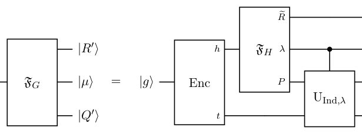
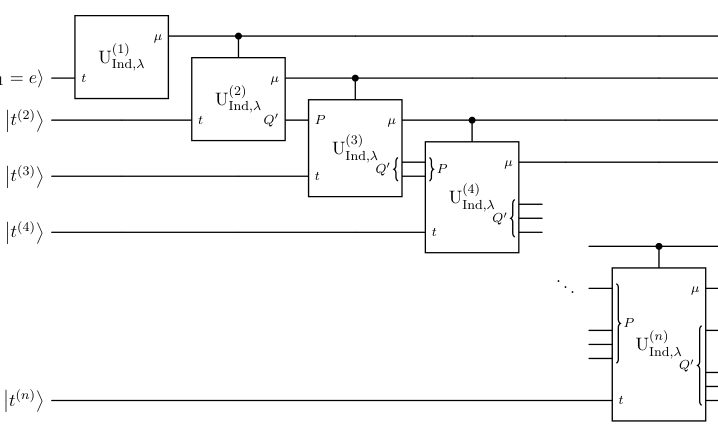
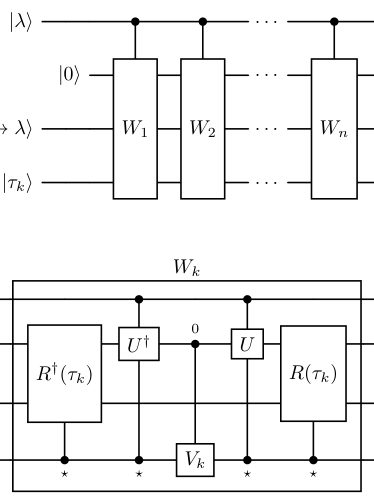
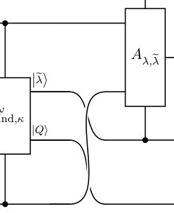
Summary. This paper presents novel, theoretically rigorous methods to construct efficient quantum circuits for the Quantum Fourier Transform (QFT) over diverse finite groups. By employing advanced tools from representation theory, such as Mackey and Clifford theories, the authors overcome previous limitations on circuit size, providing systematic blueprints for quantum computation on structured algebraic systems.
Why it may be interesting. The rigorous development of QFTs for complex, non-abelian groups provides foundational tools for designing quantum algorithms that exploit group symmetries, which is a core area of quantum computation theory.
Main problem. The primary goal is to develop efficient quantum circuits for the Quantum Fourier Transform (QFT) over various finite groups, especially non-abelian ones, which are crucial primitives in quantum algorithms.
Main result. The authors developed new systematic tools using Mackey and Clifford theories to construct QFT circuits for groups like $ ext{GL}_2(\mathbb{F}_q)$ and wreath products $F \wr S_n$, achieving polynomial scaling in $\log q$ or removing previous size restrictions.
Method. The work relies heavily on advanced representation theory concepts, including Mackey theory, Clifford theory, and subgroup induction, to systematically construct the required unitary transformations.
Model / system. The model is abstract quantum computation applied to finite groups $G$. The focus is on implementing the QFT, which is defined by transforming between different bases related to the group's representation theory (e.g., the 'little group' Fourier basis).
Key observables. Circuit size/cost (e.g., polynomial in $\log |G|$ vs. $|G|$), and the achievable gate count for specific group families.
Important parameters / regimes. Group structure (e.g., $ ext{GL}_2(\mathbb{F}_q)$, $S_n$, wreath products), the field size $q$, and the desired error tolerance $\epsilon$.
Assumptions / limitations. The complexity bounds depend on the chosen gate set, uniformity assumptions, and error criteria; previous constructions often imposed restrictive conditions on the size of subgroups.
Figures summary. Figures illustrate circuit structures for implementing the branching map $B_\gamma$ and the action of group elements on the basis states, showing sequences of unitary operations.
Paper structure. The paper builds from defining the QFT via representation theory, developing specific construction algorithms (Mackey, Little Group), and then applying these methods to derive concrete, efficient circuits for complex group families.
Quantum Fourier transforms (QFTs) are essential primitives in quantum algorithms. While abelian groups admit efficient QFT circuits, with circuit size polynomial in the logarithm of the group order, efficient constructions are known for relatively few non-abelian families. We develop two new approaches to QFT circuit construction, based on Mackey theory and Clifford theory, respectively, and use them to show exponential improvement in circuit cost for specific group families. Using the Mackey-theoretic approach, we obtain explicit quantum circuits for the QFT over $\mathrm{GL}_2(F_q)$ that scale polynomially in $\log q$, rather than polynomially in $q$. Using the Clifford-theoretic approach, we obtain QFT circuits for wreath products $F\wr S_n$, whose cost depends on the cost of a QFT over $F$ and the size of its representation registers. This removes the restriction $|F|=\operatorname{poly}(n)$ required by previous generic constructions and can yield exponential improvements when $F$ itself has an efficient QFT. Together, these methods provide new systematic tools to construct QFTs for broad classes of finite groups.
Authors: Muhammad Abid, Arth Sojitra, Bipin Tiwari, Omer San
Type: both · Category: numerical methods · PDF: https://arxiv.org/pdf/2608.27626v1
Analysis basis: full PDF text, analyzed in chunks
Summary. This paper introduces Quantum SEDONet, an enhancement to quantum deep operator networks designed to solve PDEs more accurately. It improves performance by spectrally embedding the input coordinates using basis functions appropriate for the given boundary conditions (e.g., Fourier for periodic). The method achieves significant error reduction while maintaining low overhead on quantum hardware.
Why it may be interesting. While the core application is PDE solving, the integration of spectral basis functions (Fourier/Chebyshev) into a quantum machine learning framework is a sophisticated numerical technique relevant to modeling quantum systems where boundary conditions are critical.
Main problem. The paper aims to accelerate the inference of solutions to Partial Differential Equations (PDEs) by improving the spectral representation used in quantum deep operator networks.
Main result. Quantum SEDONet significantly reduces the mean relative $L_2$ error across four PDE benchmarks (up to 54.1% reduction) while incurring negligible overhead in quantum resources (qubits/depth).
Method. It proposes Quantum SEDONet, which enhances the DeepONet trunk network by assigning a coordinate-specific spectral basis (Fourier for periodic, Chebyshev for bounded) to the input coordinates.
Model / system. The method is applied to solving various PDEs, including the antiderivative, advection, Burgers equation, and a mixed-boundary channel Poisson problem. The underlying computational framework is a quantum circuit evaluation of the neural operator.
Key observables. Mean relative $L_2$ error reduction (36% to 54%), qubit count, and circuit depth.
Important parameters / regimes. The boundary conditions (periodic vs. bounded) dictate the choice of spectral basis; results are reported in the ideal, noiseless, infinite-shot quantum regime.
Assumptions / limitations. The quantum evaluation path is assumed to perfectly reproduce the classical orthogonal network result in the ideal limit, and the spectral embedding is assumed to be resource-free.
Figures summary. The notes reference tables comparing the mean relative $L_2$ error reduction and resource costs between the baseline Q-DeepONet and the proposed Q-SEDONet across multiple PDE benchmarks.
Paper structure. The paper details the architecture, presents experimental results across four PDE benchmarks (integrative, convective, diffusion-dominated, elliptic), and discusses related work covering spectral methods and quantum PDE solvers.
Quantum DeepONet accelerates neural-operator inference by evaluating an orthogonally parameterized network on a quantum computer, reproducing in ideal simulation the accuracy of its classical counterpart at asymptotically lower inference cost. Its trunk network, however, receives query coordinates with limited spectral structure, requiring the network to learn oscillatory features through its nonlinearities. We propose Quantum SEDONet (Spectral-Embedded Deep Operator Network), which assigns each trunk coordinate a spectral basis according to its boundary condition: Fourier features for periodic coordinates and Chebyshev features for bounded, non-periodic coordinates. The basis is selected per coordinate rather than per problem, allowing both representations within a single problem. Under unary amplitude encoding, the embedding incurs no additional qubits or circuit depth when its dimension remains within the network width, while increasing the parameter count by only a few percent. Across four benchmarks, Quantum SEDONet reduces the mean relative L2 error by 54.1% for the antiderivative, 49.6% for advection, 36.0% for Burgers, and 36.2% for a mixed-boundary channel Poisson problem. Quantum and classical evaluation paths agree to within 10^-8 throughout. The channel Poisson problem simultaneously uses Fourier features in the periodic direction and Chebyshev features in the bounded direction, demonstrating coordinate-wise boundary-matched spectral embedding without additional quantum-resource cost.
Authors: Urban Duh, Friedrich Hübner, Marko Žnidarič
Type: theory · Category: statistical mechanics · PDF: https://arxiv.org/pdf/2608.28575v1
Analysis basis: full PDF text, analyzed in chunks
Summary. This paper investigates relaxation dynamics in closed, unitary quantum systems modeled by CMV matrices. It develops a sophisticated spectral analysis by comparing multiple mathematical techniques to find the system's decay rates (RP resonances). The key finding is the identification of distinct dynamic phases, showing that relaxation can be surprisingly accelerated by non-local 'backflow' effects.
Why it may be interesting. It provides a rigorous mathematical framework for understanding non-dissipative decay processes in quantum systems, connecting spectral theory (OPUC, resonances) to physical relaxation rates, which is crucial for open quantum systems theory.
Main problem. The paper addresses how relaxation occurs in purely unitary many-body dynamics, which typically lacks external dissipation mechanisms.
Main result. It identifies two distinct phases in realistic systems: one with local relaxation and a second, faster phase driven by the backflow of large operators, where resonances are 'hidden' from simple spectral analysis.
Method. The study employs advanced spectral theory, comparing results from the truncated propagator, analytic continuation of the resolvent, and rigged Hilbert space formalism.
Model / system. The focus is on unitary propagators in their canonical form, represented by CMV matrices, which model the dynamics of unitary many-body systems.
Key observables. Ruelle-Pollicott (RP) resonances, correlation functions $C(t) = \langle A(0)A(t) angle$, and the spectrum of the unitary operator.
Important parameters / regimes. The system size ($N o \infty$ limit), the structure of the CMV matrix (e.g., impurities), and the phase regime (Phase I vs. Phase II).
Assumptions / limitations. The analysis relies on the mathematical framework of orthogonal polynomials on the unit circle and the assumption that focusing on local observables is sufficient to study relaxation.
Paper structure. The paper builds by first establishing the equivalence of multiple theoretical approaches (truncated propagator, resolvent, rigged Hilbert space) for simple solvable models, and then analyzing the complex dynamics of more realistic CMV matrices to delineate distinct relaxation phases.
Leading eigenvalues of the truncated propagator, known as Ruelle-Pollicott (RP) resonances, are an elegant way of addressing the dynamics of unitary many-body systems. We study unitary propagators in their canonical form, known in the mathematical literature as the CMV matrices, and obtain a number of exact results for RP resonances and the associated norm-diverging eigenvectors. For the simplest CMV class describing a unilateral shift with an impurity, motivated by operator dynamics in dual-unitary circuits, we obtain closed-form results and in particular show that the three independent ways of obtaining RP resonances -- the truncated propagator, analytic continuation of the resolvent, and the rigged Hilbert space approach -- all give the same results. In more realistic CMV matrices, in which shift-like operator dynamics characteristic of chaotic systems is only asymptotic, we rely on the rich theory of orthogonal polynomials on the unit circle and identify two phases. In the first phase, relaxation occurs due to local operators effectively evolving into increasingly nonlocal ones with negligible backflow. Especially interesting is the second phase, which, surprisingly, exhibits faster relaxation because of contributions from the backflow of large operators. Additionally, in the second phase, RP resonances are not equal to the eigenvalues of the truncated propagator, instead, they are ``hidden'' within a ring of ill-conditioned eigenvalues.
Authors: Eric Sabo, Mahir Bilen Can, David Marquis
Type: theory · Category: quantum information and computing · PDF: https://arxiv.org/pdf/2608.27565v1
Analysis basis: full PDF text, analyzed in chunks
Summary. This paper introduces an algebraic framework to systematically study bivariate bicycle codes, which are crucial for quantum error correction. By employing advanced tools from commutative algebra, the authors derive exact formulas for code dimensions and establish rigorous lower bounds on the quantum minimum distance. This moves the field beyond numerical searches toward deterministic code construction.
Why it may be interesting. The explicit connection between algebraic coding theory (semisimple algebras, ideals) and the construction of QLDPC codes provides a powerful, deterministic tool for designing quantum error correction codes.
Main problem. The paper develops an algebraic method to analyze bivariate bicycle (BB) codes, which are identified as a leading family of quantum low-density parity-check (QLDPC) codes.
Main result. The authors derive systematic, computable formulas for the logical dimension and establish sharper, computable lower bounds on the quantum minimum distance for these codes.
Method. The approach uses advanced tools from commutative algebra, including decomposing the defining ring using Frobenius-orbit idempotents and analyzing code structures as ideals in group algebras.
Model / system. The model is the algebraic structure of bivariate bicycle codes, which are used to construct quantum error-correcting codes (QLDPC codes) for near-term quantum computing architectures.
Key observables. Logical dimension, quantum minimum distance ($d_Z$), and the structure of code symmetries (automorphisms).
Important parameters / regimes. The defining ring $R = ext{F}_q[x, y]/\langle x^{\ell-1}, y^{m-1} angle$, and the parameters $\ell$ and $m$ defining the code structure.
Assumptions / limitations. The analysis is most straightforward for coprime BB codes, and the method provides bounds rather than the exact distance.
Paper structure. The paper progresses from establishing the algebraic framework by relating BB codes to 2D cyclic codes, deriving dimension formulas via orbit decomposition, establishing duality, and finally calculating distance bounds using colon-ideal refinements.
Extending the classical theory of two-dimensional cyclic codes, we develop an algebraic approach to bivariate bicycle codes. Using Frobenius-orbit idempotents, formulas for logical dimensions are derived and lower bounds on minimum distances are established. A systematic theory of code symmetries is formulated to construct a structured block-monomial subgroup of coordinate permutations. Several explicit examples show how to generate these codes from first principles without relying on numerical searches. An appendix extends the analysis to BCH-based product constructions.
Authors: Bahman Seifi, Ibsal Assi, J. P. F. LeBlanc
Type: theory · Category: quantum information and computing · PDF: https://arxiv.org/pdf/2608.28357v1
Analysis basis: full PDF text, analyzed in chunks
Summary. This paper introduces a variational imaginary-time evolution (ITE) framework using polynomial filtering to project quantum states onto their ground state. By optimizing the evolution parameters variationally, the method overcomes the accuracy and stability limitations of standard Trotter-Suzuki or Taylor approximations. Benchmarking on the Ising model shows this approach provides higher fidelity and robustness for quantum simulation on current hardware.
Why it may be interesting. This work directly addresses the resource limitations and accuracy bottlenecks in simulating ground states on near-term quantum devices by providing a more robust, variational circuit implementation for ITE.
Main problem. The core problem is determining the ground state of a quantum many-body system by implementing imaginary-time evolution (ITE).
Main result. The proposed variational polynomial filtering framework significantly improves the accuracy and stability of ground-state projection compared to standard Trotter-Suzuki or Taylor approximations, especially for larger time steps.
Method. The authors develop an action-based variational approach (ABVA) to optimize the parameters in the imaginary-time evolution operator, replacing fixed-coefficient approximations with variational formulas.
Model / system. The methodology is benchmarked on the one-dimensional transverse-field Ising model (QIM), which serves as the quantum many-body system Hamiltonian.
Key observables. Success probability, convergence rate to the ground-state energy, and derived error bounds.
Important parameters / regimes. Imaginary time step ($ au$ or $\delta au$), Hamiltonian parameters ($J, h_x, h_z$), and system size ($N$).
Assumptions / limitations. The process relies on postselection on the desired measurement outcome, inducing an effective non-unitary transformation, and the initial state must have non-zero overlap with the ground state.
Figures summary. Figures illustrate the ancilla-assisted implementation of ITE, comparing energy evolution for standard TS-Taylor methods against the optimized variational approach for the QIM.
Paper structure. The paper develops the ITE framework, details the variational optimization (ABVA/ABVPA) for the projector, derives rigorous error bounds based on static Hamiltonian properties, and validates the method using the QIM benchmark.
In this work, we develop a variational imaginary-time evolution (ITE) framework based on polynomial filtering, derived from an operator-level action principle, which yields an optimized non-unitary projector expressed as a polynomial in the Hamiltonian. Starting from a single-ancilla, first-order imaginary-time update defined by a Taylor expansion and Trotter-Suzuki (TS) decompositions, we show that replacing these approximations with alternative variational formulas substantially improves both accuracy and stability at larger time steps, leading to up to an order-of-magnitude enhancement in the final success probability. We further derive rigorous error bounds that depend only on static properties of the Hamiltonian, providing practical guidance for selecting the simulation time step. Benchmarks on the transverse-field Ising model demonstrate faster convergence to the ground-state energy and improved robustness compared to standard TS--Taylor ITE, highlighting variational polynomial filtering as a practical route to higher-fidelity ground-state preparation on near-term quantum devices.
Papers from cond-mat.mtrl-sci, mes-hall, other, soft, supr-con. These archives are de-prioritized — they appear at the end regardless of relevance score.
Authors: Ashutosh Dubey, Hironmoy Pratihar, Diptiman Sen, Arijit Kundu
Type: theory · Category: other · PDF: https://arxiv.org/pdf/2608.27588v1
Analysis basis: full PDF text, analyzed in chunks
Topic relevance: 🔥 non-equilibrium universality 4/5 · analog quantum simulation 3/5 · driven-dissipative phase transition 3/5 · methods for driven-dissipative 3/5 · Keldysh / 2PI / non-Gaussian methods 2/5 · Full counting statistics 1/5 · correlated / nonlocal dissipation 1/5 · quantum measurements 1/5 · scars & prethermalization 1/5
Summary. This paper analyzes how topological properties manifest in the steady state of graphene nanoribbons driven by periodic light. By calculating bond currents and conductances, the authors demonstrate that topological invariants can be extracted from transport measurements, even when the system is coupled to an environment. This provides a powerful tool for characterizing topological phases in non-equilibrium quantum matter.
Why it may be interesting. This work directly addresses non-equilibrium dynamics in periodically driven systems, which is a major frontier in AMO and open quantum systems, linking topological invariants to measurable transport properties.
Main problem. The study investigates the topological signatures that emerge during the quench dynamics of periodically driven quantum systems, especially when these systems are coupled to a fermionic bath.
Main result. The paper shows that a non-zero DC bond current in the isolated system signals an induced topological phase, and the conductance in the ideal bath limit quantizes, revealing the number of edge modes.
Method. The authors employ Floquet theory to analyze the time evolution, calculating period-averaged bond currents and steady-state conductances using density matrix formalisms.
Model / system. The primary model is an armchair nanoribbon of graphene, which is subjected to periodic driving (e.g., by circularly polarized light) and can be modeled with or without a staggered mass term, and coupled to a fermionic bath.
Key observables. Period-averaged bond current, quantized bond conductance, and the Chern number (topological invariant).
Important parameters / regimes. Driving frequency ($\Omega$), bath chemical potential ($\mu_0$), and the coupling strength ($\Gamma$).
Assumptions / limitations. The analysis relies on the Floquet formalism and includes specific limits, such as the ideal bath limit ($\Gamma o 0$) and the wide-band limit for conductance calculations.
Figures summary. Figures illustrate band occupations for static vs. driven systems, present a Chern number phase diagram based on driving parameters, and show quantized bond conductance results for the three-step driving protocol.
Paper structure. The paper systematically develops the theoretical framework by first analyzing the isolated system's DC current, then extending the analysis to the bath-coupled steady state, and finally deriving the quantized conductance using advanced mathematical techniques.
We study the quench dynamics of graphene, without and with a staggered mass, following the sudden switch-on of circularly polarized light where coupling to a fermionic bath is also considered. Using an armchair nanoribbon, we compute the period-averaged bond current near the edge at successive stroboscopic times. For the isolated system, the current oscillates around a dc value which, we analytically show, equals the Floquet band currents weighted by their projected occupations; a nonzero dc current signals an induced topological phase. When coupled to a bath with a finite coupling, the current and conductance initially increase and then saturate, indicating a nonequilibrium steady state. In the limit of vanishingly small coupling, the period-averaged conductance becomes quantized after summing over bath chemical potentials shifted by integer multiples of the driving frequency, revealing the number of edge modes crossing the zero-quasienergy gap and the Floquet zone boundary gap. We support these results by computing the two-terminal conductance of a finite-size tight-binding model under a three-step driving protocol; the bond conductance after applying the sum rule corroborates our findings.
Authors: Oleg I. Utesov, Soohong Choi, Pavel Kozhevin, Min Park, Daegwang Choi, Hyungdo Lee, Alexey N. Osipov, Alexey V. Yulin, Se Kwon Kim, Yong-Hoon Cho, Igor S. Aranson, Hyoungsoon Choi, Anton V. Nalitov, Sergei V. Koniakhin
Type: both · Category: other · PDF: https://arxiv.org/pdf/2608.27823v1
Analysis basis: full PDF text, analyzed in chunks
Topic relevance: 🔥 driven-dissipative phase transition 4/5 · analog quantum simulation 3/5 · non-equilibrium universality 3/5 · Keldysh / 2PI / non-Gaussian methods 2/5 · methods for driven-dissipative 2/5 · correlated / nonlocal dissipation 1/5
Summary. This paper analyzes the non-equilibrium dynamics of polariton condensates, finding that the standard theoretical model breaks down under certain conditions. It introduces the quintic Stuart-Landau equation to accurately describe the system, revealing the existence of subcritical bifurcation, which manifests as observable on-off bistability and memory effects. This has implications for designing polaritonic devices that exploit these memory properties.
Why it may be interesting. This work provides a detailed theoretical framework for non-equilibrium phase transitions in interacting bosonic systems (polaritons), specifically identifying when and how the dynamics transition from simple supercritical behavior to complex, hysteretic subcritical regimes.
Main problem. The paper investigates the dynamics of exciton-polariton condensates, demonstrating that the standard supercritical Stuart-Landau description fails in certain parameter regimes.
Main result. The system exhibits subcritical pitchfork bifurcation, leading to observable on-off bistability and a one-bit memory effect, which requires using a quintic Stuart-Landau equation for accurate modeling.
Method. The study combines theoretical analysis (deriving and solving the quintic Stuart-Landau equation) with numerical simulations and comparison to experimental measurements.
Model / system. The physical system is an exciton-polariton condensate in a microcavity, modeled using a mean-field driven-dissipative Gross-Pitaevskii equation. The analysis simplifies this to the quintic Stuart-Landau equation near the condensation threshold.
Key observables. Bistability (hysteresis) between trivial and non-trivial condensate states, spectral line blueshift, and condensate intensity vs. pump power.
Important parameters / regimes. Pumping power, pump spot size ($r_0$), repulsion parameter ($g$), and the bifurcation parameter $c'$.
Assumptions / limitations. The analysis relies on weak nonlinearity approximations, and the quintic equation is used to correct the standard Stuart-Landau model when the bifurcation is subcritical.
Figures summary. Figures illustrate the phase flow showing bistability, the dependence of bifurcation parameters on pump spot size and repulsion, and simulated/experimental hysteresis loops for condensate intensity.
Paper structure. The paper progresses from the full governing equations (ddGPE) to deriving the applicable amplitude equations (cGLE, then quintic Stuart-Landau). It then analyzes the resulting subcritical bifurcation, discusses the self-trapping regime, and validates the theory using simulated and experimental measurements of intensity and spectral shifts.
Dynamics of exciton-polariton condensates under continuous-wave incoherent Gaussian optical pumping is considered. It is shown that the conventional supercritical Stuart-Landau picture is invalid in a certain domain of the parameter space. For strong polariton repulsion from the reservoir and relatively small pump spots, the dynamics is adequately described by the quintic Stuart-Landau equation. The corresponding subcritical pitchfork bifurcation leads to condensate formation, accompanied by bistability between the trivial and nontrivial states over a finite pump-power range and a one-bit memory. Further increase of the repulsion parameter or decrease of the spot size breaks down the perturbative approach and leads to a peculiar self-trapping regime with complex dynamics. Experimental evidence of the emergence of the proposed behavior is provided. Our findings can be used to design polaritonic setups that exploit the predicted memory effect.
Authors: Bosai Lyu, Valeria Vento, Ludivine Fausten, Daniel Suarez-Forero, Klevis Domi, Kenji Watanabe, Takashi Taniguchi, Alberto Morpurgo, Iaroslav Gaponenko, Patrycja Paruch, Ajit Srivastava
Type: experiment · Category: other · PDF: https://arxiv.org/pdf/2608.28574v1
Analysis basis: full PDF text, analyzed in chunks
Topic relevance: quantum measurements 3/5 · quantum optics experiment 3/5 · Tavis-Cummings & cavity-many-emitter 2/5 · analog quantum simulation 2/5 · QC/QI experiment 1/5 · correlated / nonlocal dissipation 1/5 · driven-dissipative phase transition 1/5 · interference shaping light 1/5 · methods for driven-dissipative 1/5
Summary. The researchers developed a Quantum Optical Super-resolution Microscope (QOSMic) to study interlayer excitons in TMD heterobilayers. By using an AFM tip, they achieved super-resolution spatial mapping and deterministic control over the charge state of individual emitters. This platform allows for the precise study of quantum phenomena like anyon dynamics by locally tuning the emitter's electronic and photonic environment.
Why it may be interesting. This work provides an exquisite example of using scanning probe techniques to engineer and probe quantum emitters at the nanoscale, directly relevant to understanding open quantum systems and cavity QED effects in solid-state materials.
Main problem. The primary goal is to achieve super-resolution spatial control and deterministic charge state control of two-dimensional quantum emitters to probe complex correlated quantum phases.
Main result. The authors demonstrated super-resolution localization of emitters separated by tens of nanometers and achieved deterministic control over individual charge states, opening pathways for studying coherent inter-dot coupling.
Method. They utilized a novel Quantum Optical Super-resolution Microscope (QOSMic) combining cryogenic optical spectroscopy with an AFM tip to locally modify the electrostatic environment and photonic density of states around the emitters.
Model / system. The system involves localized interlayer excitons in semiconducting TMD heterobilayers ($ ext{WSe}_2/ ext{MoSe}_2$) encapsulated by hBN. The control mechanism relies on the permanent dipole moment interacting with the local electric field generated by the AFM tip.
Key observables. Stark shift in PL energy, local charge state (doping) transitions (e.g., trion formation), and modification of the emission lifetime ($ au$) due to local photonic density of states (LPDOS) changes.
Important parameters / regimes. Spatial resolution down to $\sim 40 ext{ nm}$; cryogenic temperatures ($ ext{4 K}$); applied bias voltages ($V_{ ext{tip}}, V_{ ext{bg}}$).
Assumptions / limitations. The analysis relies on modeling the local electric field via the Stark shift ($\Delta E = -\mathbf{p} \cdot \mathbf{E}(\mathbf{r})$) and assuming the tip modifies the LPDOS in a quantifiable manner.
Figures summary. Figures illustrate the QOSMic setup, raster scans mapping energy shifts across multiple emitters, and plots detailing the dependence of PL energy and lifetime on tip position and applied bias voltages.
Paper structure. The paper details the QOSMic setup, presents measurements showing super-resolution mapping of energy shifts and charge state control via tip scanning, and analyzes the resulting lifetime modifications linked to LPDOS changes.
Localized interlayer excitons in semiconducting transition-metal dichalcogenide heterobilayers are quantum emitters with a static electric dipole moment, making them excellent nanoscale charge sensors to probe correlated quantum phases in a proximal layer. These emitters are electrically tunable and inherit spin-valley selection rules, yet their deterministic spatial control remains challenging due to subwavelength confinement. Here, we present a platform that combines cryogenic optical spectroscopy with scanning probe microscopy to investigate trapped interlayer excitons in WSe$_2$/MoSe$_2$ bilayers. By exploiting AFM-based local Stark shift, we achieve super-resolution localization of emitters separated by only a few tens of nanometers and demonstrate deterministic control of individual charge states, including trion formation, opening a path towards coherent inter-dot coupling. Time-resolved measurements reveal tip-induced modification of the electromagnetic vacuum around individual emitters, thus controlling their radiative emission. Our multi-point charge sensing platform with optical readout is particularly well-suited to study fractionalization and anyon dynamics in semiconducting FCIs.
Authors: Natsumi Nikaido, Takuya Kawada, Koji Fujiwara, Jihoon Park, Nan Jiang, Kouta Kondou, Shintaro Takada, Yasuhiro Niimi
Type: both · Category: other · PDF: https://arxiv.org/pdf/2608.27959v1
Analysis basis: full PDF text, analyzed in chunks
Topic relevance: Frenkel-Kontorova 3/5 · driven-dissipative phase transition 3/5 · non-equilibrium universality 2/5 · Keldysh / 2PI / non-Gaussian methods 1/5 · analog quantum simulation 1/5 · methods for driven-dissipative 1/5 · quantum measurements 1/5
Summary. This work explores the acoustoelectric effect in materials exhibiting charge density waves (CDWs) using surface acoustic waves (SAWs). The researchers found that the AE current is significantly modulated by CDW transitions and depends on the SAW propagation direction. A strain-modified conductivity model successfully accounts for these complex, anisotropic transport phenomena.
Why it may be interesting. The strong coupling between mechanical strain (from SAWs) and electronic state transitions (CDW) provides a platform for studying non-equilibrium charge transport and strain-mediated quantum phenomena, which is relevant to understanding open quantum systems dynamics.
Main problem. The study investigates how charge density wave (CDW) transitions modulate the acoustoelectric (AE) current generated by surface acoustic waves (SAWs) in layered materials.
Main result. The AE current exhibits significant modulation and polarity changes correlated with CDW transitions and the SAW propagation direction, which is explained by a strain-modified conductivity model.
Method. The research combines experimental measurements of AE current and resistance using VNA on piezoelectric substrates with the development of a phenomenological model.
Model / system. The system involves thin films of CDW materials like NbSe3 and 2H-TaSe2 exfoliated onto piezoelectric LiNbO3 substrates. The physics is governed by the coupling between SAW-induced strain/electric fields and the electronic transport properties modulated by CDW formation.
Key observables. AE current polarity and magnitude, dependence on SAW power (P_SAW), and temperature dependence near CDW transition temperatures.
Important parameters / regimes. SAW frequency/velocity, SAW power (P_SAW), CDW transition temperatures (e.g., 140 K, 60 K).
Assumptions / limitations. The AE current is modeled as arising from the rectification of the SAW-induced electric field via strain-induced modulation of conductivity.
Figures summary. Figures illustrate the SAW device setup, S21 spectra, and plots showing AE current dependence on SAW power and temperature, highlighting modulation near CDW transitions.
Paper structure. The paper structure moves from characterizing the SAW excitation and measuring the AE current to analyzing the modulation effects linked to CDW transitions, culminating in the application of a phenomenological model to explain the observed directional and transition-dependent behavior.
We studied acoustoelectric (AE) currents in materials that undergo charge density wave (CDW) transitions, induced by a surface acoustic wave (SAW) on a piezoelectric substrate. The polarity and magnitude of the AE current in NbSe$_3$ and 2H-TaSe$_2$ were modulated due to their CDW transitions. We also found that the sign of the AE current depends on the SAW propagation direction with respect to the crystalline axis of the substrate.A phenomenological model assuming strain-modified conductivity can qualitatively account for the significant modulation of the AE current associated with the CDW transition, as well as the SAW propagation orientation dependence. The present results offer a powerful probe for exploring SAW-electron interactions in van der Waals materials, thereby highlighting their potential for advancing the emerging field of straintronics.
← Index · ← Previous · Next →